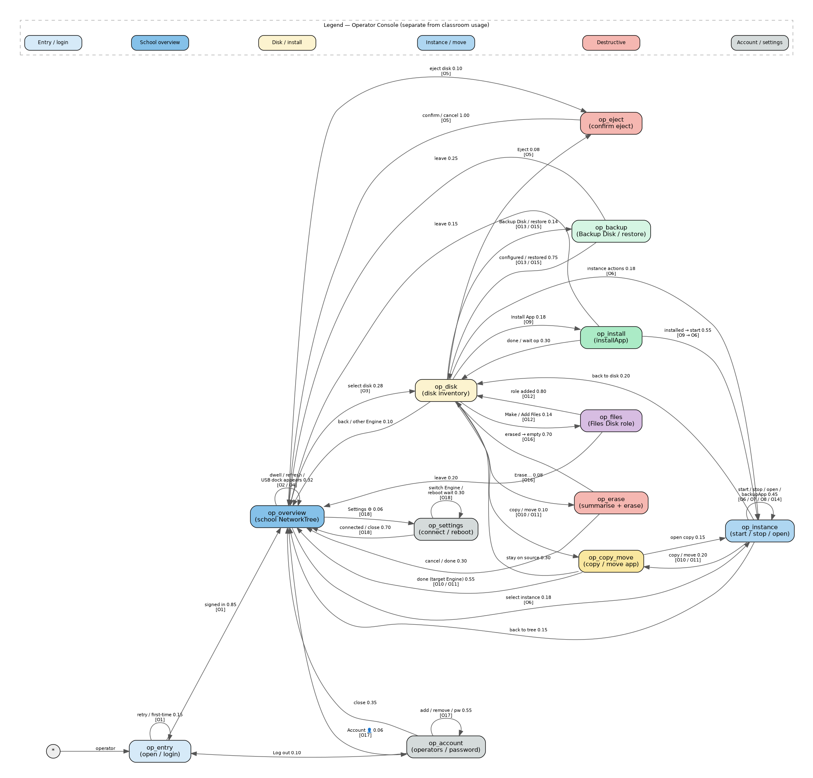

Status: Conceptual draft for discussion — companion to multi-engine-classroom.md.
Revision: 2026-09-30 — first operator Console graph (manage / alter multi-Engine setup).
Author: Steve (Lead Bot), 2026-09-30
Audience: Koen / IDEA leads
Scope boundary: This graph is only authenticated operator manage/alter flows. Classroom learner/teacher usage (Kolibri / Nextcloud / Wikipedia) stays in the classroom doc and its Markov — do not mix the graphs.
The classroom usage Markov models people using apps. Operators also manage and alter the school’s Engines: dock/eject disks, install apps, start/stop instances, redistribute load across idea-A / idea-B / idea-C, back up, erase, and manage operator accounts.
Koen’s vision already says any Console can manage all Engines’ apps. This document inventories what the Console UI and Engine commands actually offer today, then builds a separate Markov graph so later tests can walk operator flows without bloating the classroom usage graph.
Performance is optimized by adding Appdockers and redistributing the apps over the Appdockers.
Source: agent-engine-dev/proposals/solution-description.md
Physical metaphor: dock a disk (USB) onto an Engine; Console ejects safely before unplug. Redistribution is moveApp / copyApp (and/or eject + dock elsewhere), not a separate “claim Engine” Console button.
Inventoried from local clones /workspace/agent-console-dev and /workspace/agent-engine-dev (commands, components, docs). Only these land on the graph.
| Mode | Who | Login? | UI |
|---|---|---|---|
| User | students, teachers | No | AppBrowser — open running apps |
| Operator | IT / ops | Yes | NetworkTree + disk/instance management |
Sources: agent-console-dev/README.md, docs/ARCHITECTURE.md, proposals/console-user-management.md.
| Feature | UI | Notes |
|---|---|---|
| First-time setup | FirstTimeSetup |
When userDB empty — create first admin |
| Log in | LoginForm / Account 👤 |
Username + password (bcrypt in userDB) |
| Log out | Account screen | Returns to user mode |
| Add / remove operators | OperatorManagement |
Via Account → Manage Operators |
| Change password | Account / Settings → Account | Min 8 characters |
| Feature | UI | Notes |
|---|---|---|
| Network tree | NetworkTree |
Engines + docked disks; role badges app / backup / files / empty / upgrade |
| Select Engine / disk | tree selection | Filters InstanceList / shows DiskView or EmptyDiskPanel |
| Engine discovery / connect | ConnectionManagement / Settings |
Auto-discover hostnames; manual hostname; switch connected Engine |
| Reboot Engine | NetworkTree reboot control | Sends reboot |
| Operation progress / cancel | OperationProgress |
cancelOperation |
| History / command log | HistoryPanel / CommandHistory |
Observe traces |
| Disk role | Configure / act | Commands |
|---|---|---|
| Empty | Make Files Disk; Make Backup Disk; Install App; Erase | createFilesDisk, createBackupDisk, installApp, summariseDisk/eraseDisk |
| App | Start/Stop/Open instances; Backup; Copy/Move; Add Files; Erase; Eject | startInstance, stopInstance, backupApp, copyApp, moveApp, createFilesDisk, eraseDisk, ejectDisk |
| Backup | Restore panel; (pure backup: no eject) | restoreApp; createBackupDisk already done |
| Files | Share name / availability text; eject rules | createFilesDisk (add role); mount into opted-in apps is Engine-side |
| Upgrade | Badge only in tree | Upgrade ops appear in operationDB when an Upgrade Disk is processed — no separate Console “Upgrade” button inventoried |
| System | No eject / no erase | Protected |
InstanceRow)backupAppMobileCopyMoveSheet on mobile) → copyApp / moveApp| Action | Where | Notes |
|---|---|---|
| Physical dock | USB plug into Engine | Disk appears in shared store / NetworkTree — not a Console click |
| Eject | NetworkTree / disk → EjectConfirm |
ejectDisk <diskId> — stops instances, unmounts; then operator unplugs |
| Undock (store) | Result of eject / physical removal | No separate “Undock” button beyond Eject |
| Item | Status |
|---|---|
| Claim Engine / pool claim | Not a Console feature. Fleet claim scripts are test/Ops infra (PI_FLEET.md); classroom doc already lists them out of scope. Omitted from graph. |
| Dedicated uninstall / removeApp button | No Console command helper. Removing an app’s instances is via erase disk (or stop + leave Stopped). Do not invent a remove-app node. |
| buildEngine provisioning | Engine CLI / Ops — not daily Console Markov. |
| Automatic “redistribute wizard” | Vision text only; Console redistribution = moveApp / copyApp + physical re-dock. |
Confidence: High for commands in src/store/commands.ts and panels under src/components/ listed above. Medium for Upgrade Disk operator workflow (badge + operation kinds exist; no dedicated upgrade click script). Low/N/A for claim — confirmed absent from Console.
O1… on edges.multi-engine-operator-markov.dot (+ png/svg). Classroom graph untouched except a pointer.| Node | Meaning | Scenario IDs |
|---|---|---|
op_entry |
Open Console, connect/discover, Log in or first-time setup | O1 |
op_overview |
Operator NetworkTree — idea-A/B/C, disks, status (hub) | O2, O4 (USB dock appears) |
op_disk |
Selected disk — EmptyDiskPanel or DiskView inventory | O3 |
op_eject |
Eject confirm dialog | O5 |
op_instance |
Start / Stop / Open / on-demand Backup on an instance | O6, O7, O8, O14 |
op_install |
Install App onto a disk | O9 |
op_copy_move |
Copy or Move app to another disk (possibly other Engine) | O10, O11 |
op_files |
Make / Add Files Disk role | O12 |
op_backup |
Configure Backup Disk; Restore from Backup Disk | O13, O15 |
op_erase |
Summarise + typed confirm erase | O16 |
op_account |
Operators list / add / remove / change password / logout | O17 |
op_settings |
Settings: Engine Connection, reboot, About | O18 |
Graphviz: multi-engine-operator-markov.dot. Rendered:

stateDiagram-v2
[*] --> op_entry: operator
op_entry --> op_overview: signed in 0.85 [O1]
op_entry --> op_entry: retry / first-time 0.15 [O1]
op_overview --> op_disk: select disk 0.28 [O3]
op_overview --> op_instance: select instance 0.18 [O6]
op_overview --> op_eject: eject disk 0.10 [O5]
op_overview --> op_account: Account 0.06 [O17]
op_overview --> op_settings: Settings 0.06 [O18]
op_overview --> op_overview: dwell / refresh / USB dock 0.32 [O2 / O4]
op_disk --> op_install: Install App 0.18 [O9]
op_disk --> op_files: Make / Add Files 0.14 [O12]
op_disk --> op_backup: Backup Disk / restore 0.14 [O13 / O15]
op_disk --> op_instance: instance actions 0.18 [O6]
op_disk --> op_copy_move: copy / move 0.10 [O10 / O11]
op_disk --> op_erase: Erase 0.08 [O16]
op_disk --> op_eject: Eject 0.08 [O5]
op_disk --> op_overview: back 0.10
op_eject --> op_overview: confirm / cancel 1.00 [O5]
op_erase --> op_disk: erased → empty 0.70 [O16]
op_erase --> op_overview: cancel / done 0.30
op_files --> op_disk: role added 0.80 [O12]
op_files --> op_overview: leave 0.20
op_backup --> op_disk: configured / restored 0.75 [O13 / O15]
op_backup --> op_overview: leave 0.25
op_install --> op_instance: installed → start 0.55 [O9 → O6]
op_install --> op_disk: done / wait 0.30
op_install --> op_overview: leave 0.15
op_instance --> op_instance: start/stop/open/backup 0.45 [O6/O7/O8/O14]
op_instance --> op_copy_move: copy / move 0.20 [O10 / O11]
op_instance --> op_disk: back to disk 0.20
op_instance --> op_overview: back to tree 0.15
op_copy_move --> op_overview: done 0.55 [O10 / O11]
op_copy_move --> op_disk: stay on source 0.30
op_copy_move --> op_instance: open copy 0.15
op_account --> op_account: add / remove / pw 0.55 [O17]
op_account --> op_overview: close 0.35
op_account --> op_entry: Log out 0.10
op_settings --> op_overview: connected / close 0.70 [O18]
op_settings --> op_settings: switch Engine / reboot 0.30 [O18]
How this maps to tests. Each Markov node is a coarse place an operator can be. Inside a node, the harness expands into an ordered UI script — no node-per-click. Scenario IDs in [brackets] on edges name the scripts below. Probabilities are placeholders.
UI labels match Console components (NetworkTree, EmptyDiskPanel, DiskView, InstanceRow, EjectConfirm, EraseDialog, AccountScreen, SettingsPanel). Exact Playwright selectors belong in a later harness.
Multi-Engine story: operator may open Console on any of idea-A / idea-B / idea-C; after login the NetworkTree shows the school mesh (shared store). Commands are sent to the Engine that owns the target disk (dockedTo).
op_entry — open Console / sign inOperator opens a browser (or Chrome extension) on the school LAN, lands on user-mode AppBrowser if already connected, then elevates to operator mode.
Concrete UI (scenario O1):
userDB empty → First-time setup: create admin username + password → lands in operator mode.op_overview.op_overview — school NetworkTreeHub state. Operator sees Engines (idea-A / B / C), disks with role badges, instance status. Dwells, refreshes mentally as CRDT updates arrive, or reacts when a USB disk is docked.
Typical actions:
O2 / O4).op_disk (O3).op_instance (O6).op_eject (O5).op_account (O17).op_settings (O18).Physical dock (O4): plug SSD into idea-B (or C); disk row appears under that Engine; select it → op_disk. Not a Console button.
op_disk — disk inventoryEmpty disk → EmptyDiskPanel cards. App/Backup/Files disk → DiskView sections (Apps, Backups, Files).
Branch by panel:
| Action | → node | ID |
|---|---|---|
| Install App | op_install |
O9 |
| Make this a Files Disk / Add Files | op_files |
O12 |
| Make this a Backup Disk / open Backups restore | op_backup |
O13 / O15 |
| Instance Start/Stop/Open/Backup | op_instance |
O6… |
| Copy / Move instance | op_copy_move |
O10 / O11 |
| Erase this disk… | op_erase |
O16 |
| Eject | op_eject |
O5 |
op_eject — confirm ejectScenario O5: Eject control → EjectConfirm → confirm → ejectDisk → disk undocks in tree → operator may physically unplug → back to op_overview.
op_instance — start / stop / open / backupScenarios O6 / O7 / O8 / O14: On InstanceRow: Start, Stop, Open ↗, Backup (disk picker). Stay in-node for several toggles; leave to copy/move, disk, or overview.
op_install — installAppScenario O9: Empty (or eligible) disk → Install App → pick app from catalog → optional name → Install → wait OperationProgress → often Start (O6).
op_copy_move — redistributeScenarios O10 (copy) / O11 (move): Drag instance to another App Disk (possibly on another Engine in the tree) or use mobile sheet Copy / Move. Vision “redistribute apps over Appdockers” = these commands (+ eject/dock). Target disk must be docked to the Engine that receives the command.
op_files — Files Disk roleScenario O12: Make this a Files Disk (empty) or Add Files (app/backup disk) → share name (default School Files) → createFilesDisk. Optional erase-then-files path uses op_erase first.
op_backup — Backup Disk / restoreScenarios O13 / O15: Empty → Make this a Backup Disk (mode: on-demand / immediate / scheduled + link instances). On a Backup Disk section → pick archive → target App Disk → Restore (restoreApp). On-demand backupApp from an instance can also start from op_instance (O14).
op_erase — eraseScenario O16: Erase this disk… → EraseDialog → Engine summariseDisk → type exact label → eraseDisk → disk becomes empty → often return to op_disk EmptyDiskPanel.
op_account — operators / passwordScenario O17: 👤 → Manage Operators (add / remove) / change password / Log out → op_entry.
op_settings — connect / rebootScenario O18: ⚙ → Engine Connection (discover / Connect / manual hostname) / Account tab / About. Reboot from NetworkTree may be modelled as leaving overview into a wait on settings/overview self-loop after reboot.
These are test scripts, not extra Markov nodes. Preload: three Engines visible in store (idea-A/B/C), at least one empty USB disk, one App Disk with a Stopped instance, one Backup Disk when testing restore.
| Scenario ID | Markov node(s) | Matches |
|---|---|---|
O1 |
* → op_entry → op_overview |
Connect + login / first-time |
O2 |
op_overview |
Inspect school tree (dwell) |
O3 |
op_overview → op_disk |
Select disk inventory |
O4 |
op_overview (self) → op_disk |
Physical USB dock appears |
O5 |
op_overview / op_disk → op_eject → op_overview |
Eject confirm |
O6 |
→ op_instance |
Start instance |
O7 |
op_instance |
Stop instance |
O8 |
op_instance |
Open app (ops check) |
O9 |
op_disk → op_install |
Install App |
O10 |
→ op_copy_move |
Copy app to another disk |
O11 |
→ op_copy_move |
Move app (redistribute) |
O12 |
op_disk → op_files |
Make / Add Files Disk |
O13 |
op_disk → op_backup |
Make Backup Disk |
O14 |
op_instance |
On-demand backupApp |
O15 |
op_disk → op_backup |
Restore from Backup Disk |
O16 |
op_disk → op_erase |
Erase disk |
O17 |
op_overview → op_account |
Manage operators / password |
O18 |
op_overview → op_settings |
Settings / switch Engine / reboot |
O1 — Operator opens Console and signs inRole: operator · Engines: any Console (idea-A / B / C).
Markov: * → op_entry → op_overview.
O2 — Inspect school overviewMarkov: op_overview self-loop.
O3 — Select disk inventoryMarkov: op_overview → op_disk.
O4 — Physical dock appearsMarkov: op_overview (USB event) → select new disk → op_disk.
op_overview, note disk list.op_disk.O5 — Eject diskMarkov: → op_eject → op_overview.
EjectConfirm.O6 — Start instanceMarkov: → op_instance.
O8).O7 — Stop instanceMarkov: op_instance.
O8 — Open app (ops check)Markov: op_instance.
O9 — Install AppMarkov: op_disk → op_install → often op_instance.
O6).O10 — Copy appMarkov: → op_copy_move.
copyApp operation → new InstanceID on target.O11 — Move app (redistribute)Markov: → op_copy_move.
O12 — Make / Add Files DiskMarkov: op_disk → op_files.
School Files (or custom) → submit.files badge; availability text updates when opted-in apps run.O13 — Make Backup DiskMarkov: op_disk → op_backup.
backup badge.O14 — On-demand backupMarkov: op_instance.
backupApp.O15 — Restore from Backup DiskMarkov: op_disk → op_backup.
O16 — Erase diskMarkov: op_disk → op_erase → op_disk (empty).
empty; prior instances gone from store for that disk.O17 — Manage operatorsMarkov: op_overview → op_account.
op_entry.O18 — Settings / switch Engine / rebootMarkov: op_overview → op_settings.
op_overview.| Walk | Story | Scenario chain |
|---|---|---|
| Add capacity | New empty disk on idea-C → install Kolibri → start | O4 → O9 → O6 |
| Redistribute load | Move heavy instance idea-B → idea-C | O3 → O11 |
| Safe disk carry | Eject on idea-B → (unplug) → dock on idea-A | O5 → O4 → O3 |
| Files for Nextcloud | Make Files Disk on idea-A → start Nextcloud | O12 → O6 |
| Backup drill | Make Backup Disk → backupApp → restore elsewhere | O13 → O14 → O15 |
| Document | Graph | Audience |
|---|---|---|
multi-engine-classroom.md |
multi-engine-markov.* |
Learners + teachers using Kolibri / Nextcloud / Wikipedia |
| This file | multi-engine-operator-markov.* |
Operators managing Engines / disks / instances |
Classroom scenarios S1 / S7 mention operator dock/start only as story context; their scripts stay usage-side. Operator click paths live here (O*).
| Source | Use |
|---|---|
agent-console-dev/src/store/commands.ts |
Full Console→Engine command surface |
agent-console-dev/src/components/* |
NetworkTree, EmptyDiskPanel, DiskView, InstanceRow, EjectConfirm, EraseDialog, AccountScreen, OperatorManagement, SettingsPanel, RestorePanel, MobileCopyMoveSheet |
agent-console-dev/docs/ARCHITECTURE.md |
Dual-mode UI, auth, discovery |
agent-console-dev/src/store/diskRoles.ts |
Role badges, eject rules, Files availability |
agent-engine-dev/docs/COMMANDS.md |
Engine command semantics (install/start/stop/eject/erase/files/backup/copy/move/reboot) |
agent-engine-dev/proposals/solution-description.md |
Vision: autofind + redistribute |
agent-engine-dev/proposals/install-app.md, copy-move-app.md, backup-disk.md |
Merged proposal behaviour |
PI_FLEET.md |
Confirms fleet claim is test infra, not Console UI |
multi-engine-classroom.md |
Conventions for nodes / scenario IDs / story walkthrough |
buildEngine provisioning walks.O1–O18.